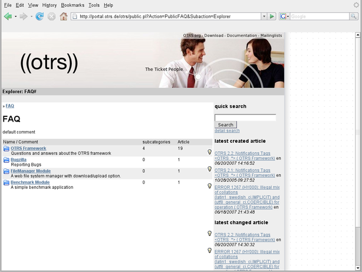

In addition to the web interfaces for agents and customers, OTRS also has a public web interface which is available through the FAQ-Module. This module needs to be installed separately. It provides public access to the FAQ system and lets visitors search through FAQ entries without any special authorization.
In our example, the public web interface can be reached via either of the following URLs: http://www.example.com/otrs/faq.pl , http://www.example.com/otrs/public.pl

Figure: Public web interface.